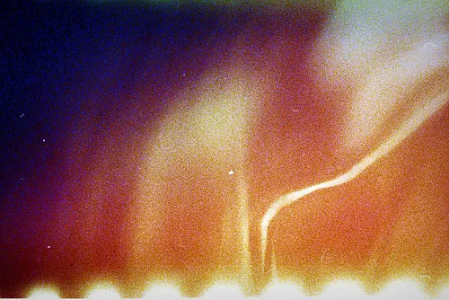
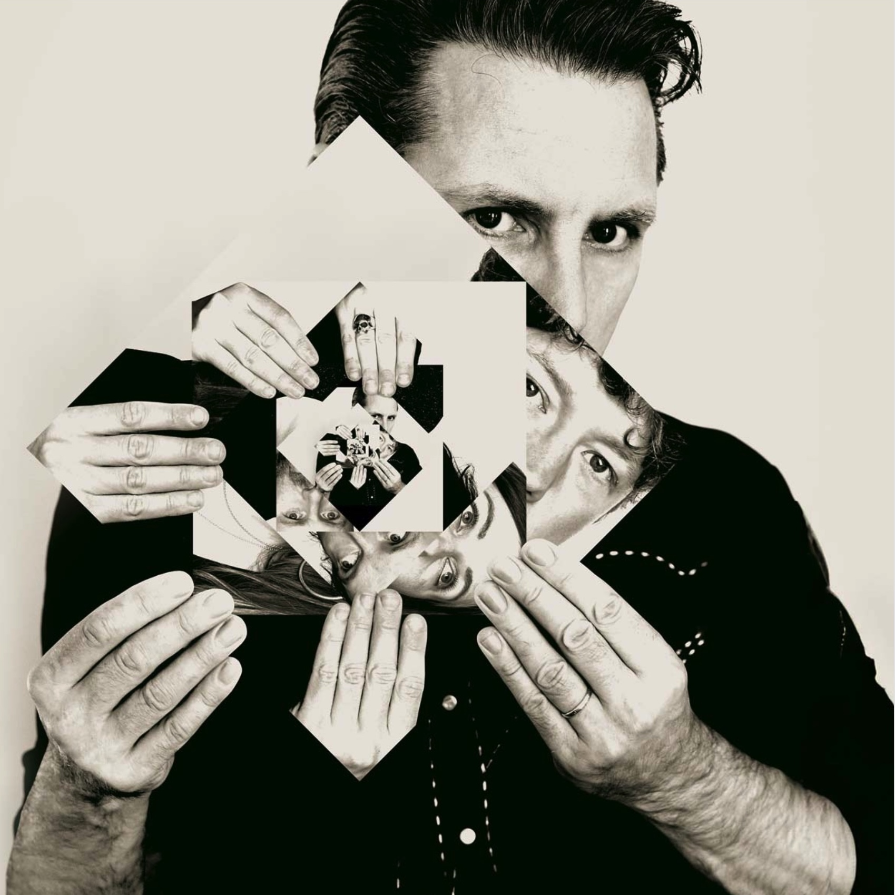

Creating innovative and boundary-pushing art since 2004

Franz Ferdinand is an experimental artist based in Netherlands, creating works that challenge perception and reality through kaleidoscopic imagery.
Through a unique blend of traditional techniques and innovative approaches, each piece becomes a journey into the unexpected. The work explores themes of perception, reality, and the multiplicity of human experience.
The studio practice is deeply rooted in experimentation and the constant push to break new ground in visual arts. Each piece is carefully crafted to create immersive experiences that resonate with viewers on both emotional and intellectual levels.
Featured in galleries across Europe and North America
Work featured in leading art publications
Represented in private collections worldwide
Every piece of artwork that leaves my studio first goes through a metamorphosis: rest, inspiration gathering, creative play, refinement, critique, thoughtful editing, careful production, blessings for your home and how the art will impact your life, and finally, I offer and release it to you. Is it a little extra? Maybe. But this is the beauty of the creative process.